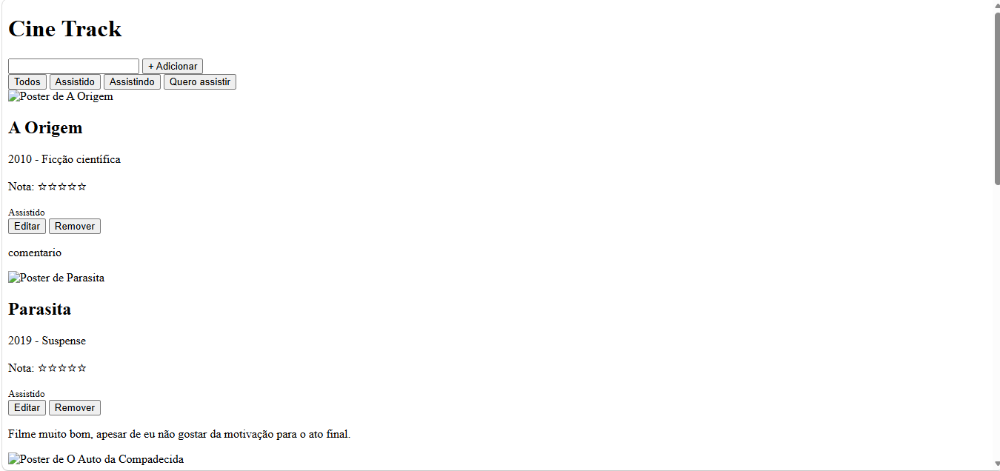

Cadastrar e editar
Adicione filmes com ano, gênero, nota, comentário e pôster, e altere quando quiser.
O CineTrack é um gerenciador pessoal de filmes criado na disciplina de Programação de Sistemas Web da Universidade Estadual de Maringá. Organize o que você já viu, o que está vendo e o que quer ver.
Adicione filmes com ano, gênero, nota, comentário e pôster, e altere quando quiser.
Veja só o que foi assistido, o que está em andamento ou o que está na fila.
A busca filtra a lista enquanto você digita.
Avalie de 1 a 5 estrelas e deixe um comentário sobre cada título.
Tudo fica salvo no próprio dispositivo, sem cadastro e sem servidor.
| Título | Ano | Gênero | Status |
|---|---|---|---|
| Carros | 2010 | Animação | Assistido |
| Batman: O Cavaleiro das Trevas | 2008 | Ação | Assistido |
| Joker | 2019 | Suspense Psicológico | Assistido |
| O Senhor dos Anéis | 2001 | Fantasia | Quero assistir |
| Parasita | 2019 | Suspense | Assistido |
| Duna | 2021 | Ficção Científica | Quero assistir |

| Campo | Tipo | Regra |
|---|---|---|
id |
Número | Gerado automaticamente |
titulo |
Texto | Obrigatório |
ano |
Número | Obrigatório, entre 1888 e 2030 |
genero |
Texto | Romance, Ficção científica, Drama, Comédia, Terror ou Animação |
status |
Texto | Assistido, Assistindo ou Quero assistir |
nota |
Número | Obrigatória, de 1 a 5 estrelas |
comentario |
Texto | Opcional |
poster |
URL | Opcional; usa uma imagem padrão se ficar vazio |
Henrique M. Neves da Silva
ra134557Hiago A. Dantas Teixeira
ra139001